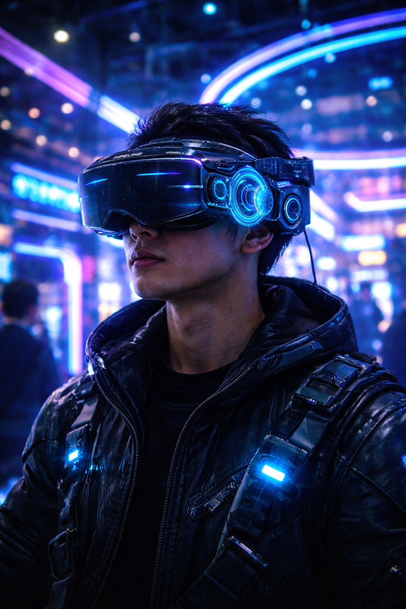
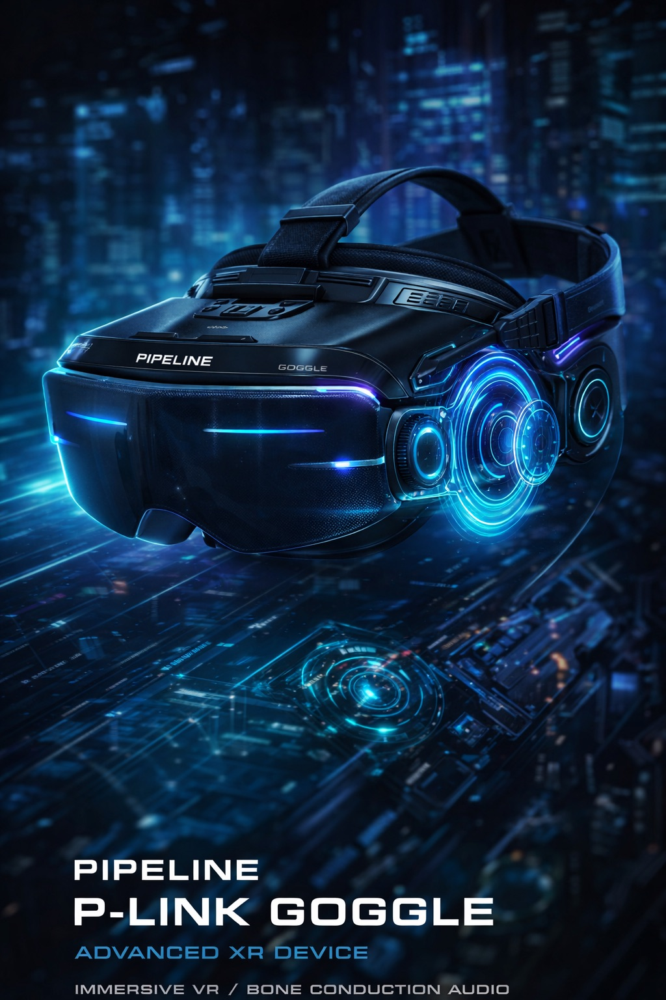
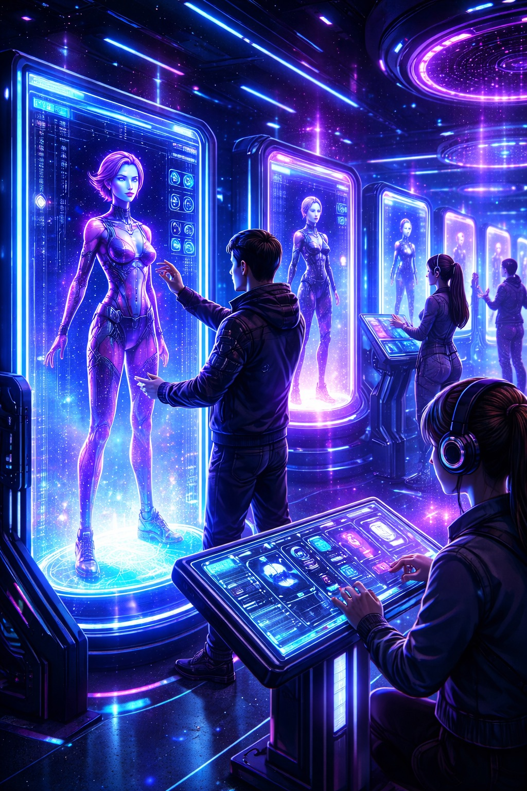

XR USER EXPERIENCE

IMMERSIVE USER MODE
骨伝導イヤホン付きXRゴーグルを装着し、 現実空間の中で電脳都市への接続を開始する。

WALK THROUGH CYBER PARK
NEO CYBER TOKYO PARK内を移動しながら、 XRゴーグル越しに電脳空間の演出と案内を体験する。
PIPELINE XR SYSTEM
XR DEVICE INITIALIZING
NEXT GENERATION IMMERSIVE DEVICE
PIPELINEが開発した次世代XRゴーグル。
骨伝導イヤホンと高精度センサーを搭載し、
現実世界と電脳空間をシームレスに接続する。

SYSTEM STANDBY
NEO CYBER TOKYO PARK 体験専用デバイス
株式会社PIPELINEが開発した次世代XRゴーグル。
骨伝導イヤホンを搭載し、電脳空間の音と映像を
同時に体験できる没入型デバイス。
※入場時にXRデバイスが貸与されます
SYSTEM STANDBY
骨伝導イヤホンを搭載。
外部音を遮断せず立体音響を体験。
高精度VRディスプレイで
電脳空間へ没入。
心拍・ストレス値を計測し
安全なVR体験をサポート。
NEO CYBER TOKYO PARKに
完全対応。

骨伝導イヤホン付きXRゴーグルを装着し、 現実空間の中で電脳都市への接続を開始する。
NEO CYBER TOKYO PARK内を移動しながら、 XRゴーグル越しに電脳空間の演出と案内を体験する。

施設入場時にPIPELINE XR Goggleを装着。
電脳空間体験を開始。

NEON CIRCUITのライブを
空間音響で体感。

アバターとして
電脳都市に接続。